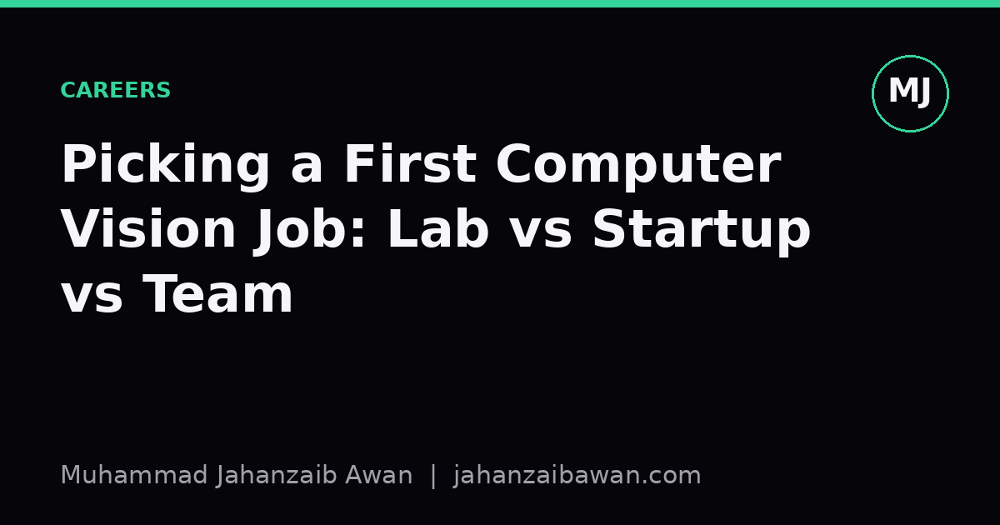

Picking a First Computer Vision Job: Lab vs Startup vs Team
The label on the offer letter matters less than what you will actually spend your days doing. Here is how I would weigh the trade-offs before signing anything.

Why the choice feels bigger than it is
When you are finishing an MSc or early in your career, the first computer vision job can feel like a fork that determines everything downstream. It does not, not really, but the three common paths do shape your habits in ways that stick for years. A research lab trains you to ask whether an idea is true. A startup trains you to ship something that works before the money runs out. An industry team inside a larger company trains you to make a system reliable at scale, under constraints you did not choose. All three are legitimate ways to become a strong computer vision practitioner, but they optimise for different muscles, and it is worth being honest about which muscle you actually want first.
I think the mistake people make is choosing based on the name on the building rather than the daily loop they will live inside. A famous lab with a boring project will teach you less than a small unglamorous team with a tight feedback cycle. So instead of ranking the three categories by prestige, it helps to ask three concrete questions: what does a typical Tuesday look like, who reviews my work and against what standard, and what happens if I am wrong for three months in a row. The answers differ enormously between settings, and they are the real signal.
Research labs: depth, but slow feedback
In a research lab, your Tuesday might involve reading two papers, running an ablation on a benchmark, and spending an afternoon arguing with a labmate about whether your improvement is real or just a leakage-prone split giving you a flattering number. The reward loop is slow: a paper might take six to nine months from idea to submission, and a rejection can arrive with reviewer comments that feel more like a verdict on your competence than feedback on a specific claim. What you gain is depth. You learn to read the entire pipeline of a method, from the loss function to the exact preprocessing steps that quietly inflate results, and you build the discipline of asking for a strong baseline before you believe your own contribution.
The risk is that labs can teach you to optimise for a leaderboard number rather than a working system. I have seen benchmark improvements of a point or two on a standard detection dataset treated as significant, when a fair look at variance across random seeds would show the gain sits well inside the noise. If you go this route, protect yourself by insisting on proper baselines and multiple seeds even when nobody asks, because that habit is the actual transferable skill, more than any specific architecture you happen to work on.
Startups: speed, but thin support
At a startup, your Tuesday looks different again. You might be labelling data in the morning because the annotation vendor delivered garbage, debugging a model that works in your notebook but fails on the customer's camera angle by lunch, and presenting a rough demo to a founder by five. Feedback here is brutally fast: a model that does not work is obvious within days, not months, because the product either functions or it does not. This is an extraordinary environment for learning the full stack of a computer vision system, from data collection through to deployment on constrained hardware, because there is nobody else to hand the messy parts to.
The cost is that you rarely get to go deep on any one problem, and the standards of evaluation can be looser than you would like, because a founder under pressure to close a deal will happily accept a demo that works on three curated examples. A concrete illustration: imagine a startup building a defect-detection model for a manufacturing client, reporting ninety-six percent accuracy on a test set of two hundred images pulled from the same production line and lighting rig as the training data. That number tells you almost nothing about performance on a different factory next month, and a junior engineer who has only worked in this setting can absorb the habit of trusting numbers that would not survive a proper held-out split by time and by site. If you choose a startup, the practical takeaway is to insist on your own rigour even when the pace does not naturally reward it, because nobody else will enforce it for you.
Industry teams: scale, but narrow scope
An industry team inside an established company, think a vision team at a retailer, a logistics firm, or a large platform, gives you a third kind of Tuesday: reviewing a monitoring dashboard because a model's precision dropped on a specific store region overnight, writing a change proposal that has to pass three separate reviewers, and spending real time on the unglamorous plumbing that keeps a system alive for months rather than a single demo day. This is where you learn what it means for a model to be in production: distribution shift, silent failures, the cost of a false positive versus a false negative expressed in actual money rather than an F1 score, and the discipline of writing evaluation reports that someone six months from now, who was not in the room, can still trust.
The trade-off is narrower scope. You might spend a year deeply expert in one specific problem, say shelf-stock detection or document verification, without touching the broader landscape of computer vision methods. That specialisation is not a weakness, it is simply a different shape of expertise, one that tends to be underrated by people who have not yet worked in production and overrated in job postings that ask for five years of experience with a technique that is three years old.
My honest advice: if you are unsure which of your instincts is strongest, right now, favour the environment that will expose the gap fastest. If you suspect your weakness is rigorous evaluation, a lab will force it on you. If your weakness is shipping anything at all, a startup will force it on you. If your weakness is thinking about a model as a long-lived system rather than a one-off result, an industry team will force it on you. Pick the discomfort that teaches you the most, not the title that sounds best on a slide.